iOS-app for sportrening
Brukermanual
Alt du trenger for å legge spor, gå spor og følge treningen over tid.
Sist oppdatert: 10. oktober 2026
01
Kom i gang
Trax er laget for hundeførere som trener spor. Du legger sporet med telefonen i lomma, markerer gjenstander underveis, og går sporet med hunden etterpå mens appen viser hvor sporleggeren gikk.
- Første gang du åpner appen, får du en kort introduksjon. Bla deg gjennom med «Fortsett».
- Trykk «Gi stedstilgang» og velg «Tillat ved bruk av appen».
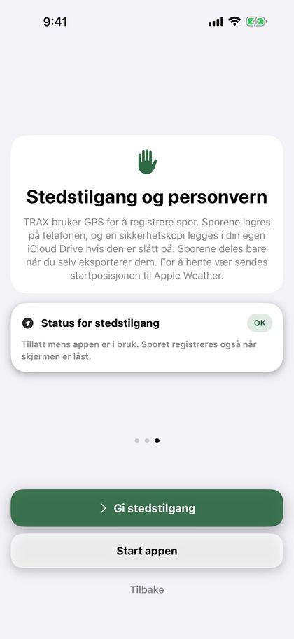
Tips: «Ved bruk av appen» er nok. Når du har trykket «Start», fortsetter sporingen også når skjermen er låst eller du bytter app, og iOS viser en blå markering øverst på skjermen. Du kan endre tilgangen under Innstillinger › Trax › Posisjon på iPhonen.
Trax trenger «Presis posisjon». Uten den kan posisjonen bomme med flere hundre meter. Er den slått av, ber appen om presis posisjon når du skal legge eller gå et spor, og viser kortet «Presis posisjon er av» med en lenke til Innstillinger. Slå på «Presis posisjon» for Trax der.
Trax og brukermanualen følger språket på telefonen: norsk bokmål, svensk eller engelsk.
02
Hjem-skjermen
Herfra starter du alt, og her finner du alle sporene dine.
- «Nytt spor» starter sporlegging.
- «Importer» henter et spor fra en Trax- eller GPX-fil, for eksempel et spor noen har sendt deg.
- «Klar til å gås» viser spor som er lagt, men ikke gått, og hvor lenge siden de ble lagt. Står det «Spor pågår», er sporet startet, men ikke stoppet.
- «Siste spor» viser de tre siste sporene som er både lagt og gått, med antall funn. Trykk på et spor for å se detaljene.
- «Se alle» ved «Siste spor» åpner siden «Fullførte spor» med alle sporene dine. Øverst til høyre der finner du dokumentknappen for PDF per hund og «Rediger» for å slette flere spor.
- Har du registrert hunder, vises knapper øverst på siden «Fullførte spor»: «Alle» og én for hver hund. Spor uten hund ligger under «Alle». Velger du en hund, ser du bare sporene dens og et sammendrag med antall spor, hvor stor del av gjenstandene som er funnet, antall spor de siste 30 dagene og «På sporet», og en graf over utviklingen (se «Hunder»). Har hunden ingen fullførte spor, står det «… har ingen fullførte spor ennå». Hunder du har slettet, beholder knappen sin så lenge de har spor. Vil du skjule en slik hund, holder du fingeren på knappen og velger «Skjul fra filteret». Under Innstillinger › Mine hunder › «Tidligere hunder» kan du vise den igjen.
- Har sporene på siden minst to sportyper, kommer det knapper for sportype under hundeknappene: «Alle typer», «Spor», «IGP-spor» og «Blodspor».
- Små ikoner på hvert spor viser sportypen (figur for spor, rosett for IGP-spor, bloddråpe for blodspor), hunden (pote), om sporet er importert (pil inn) og om du har eksportert det (pil ut).
Øverst til høyre finner du Innstillinger (tannhjulet) og Brukermanual (boken).
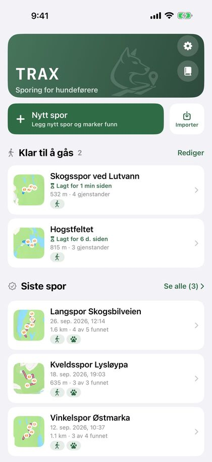
03
Legge spor
Som sporlegger går du sporet først, mens appen registrerer ruten med GPS.
- Trykk «Nytt spor» på hjem-skjermen.
- Velg sportype med de tre store knappene: «Spor», «IGP-spor» eller «Blodspor». «Spor» er valgt fra før (se «Sportype og blodspor»).
- GPS-en starter så snart skjermen åpnes. Vent til GPS-prikken øverst er grønn eller gul, og trykk den store «Start»-knappen.
- Gå sporet. Ruten tegnes på kartet mens du går.
- Trykk «Gjenstand» for å legge ut en gjenstand der du står (se «Gjenstander»).
- Trenger du en pause, trykker du «Pause». Trykk «Fortsett» for å gå videre. Strekningen mens sporet er pauset, blir ikke registrert.
- Trykk «Stopp» når sporet er ferdig lagt.
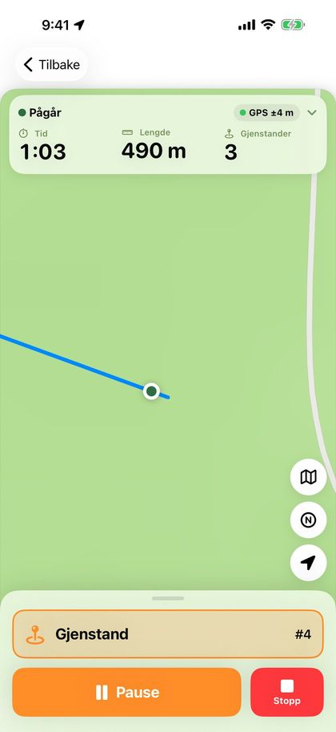
Er GPS-signalet svakt før du starter, vises en boks under feltet øverst. Rød betyr at du bør vente på bedre signal, gul at du kan starte, men at sporet blir mer nøyaktig om du venter. Boksen lukkes av seg selv når signalet blir godt, eller når du trykker «OK, forstått». Du kan alltid starte.
Feltet øverst viser tid, lengde og antall gjenstander med store tall, hvor nøyaktig GPS-en er, og batterinivået. Grønn prikk betyr under 10 meter, gul 10–25 meter og rød over 25 meter. Står det «Ingen GPS», har telefonen ikke fått posisjon på over 15 sekunder. Trykk på feltet for å se når sporet startet, når posisjonen sist ble oppdatert, og koordinaten du står på.
Når du trykker «Start», zoomer kartet inn på deg, alltid med samme utsnitt. Zoomer du under sporet, beholdes zoomen du valgte.
Knappene på høyre side av kartet bytter kart og sentrerer kartet på deg igjen. Kartknappen går i ring mellom vanlig kart, topo og satellitt. Topo er Kartverkets topografiske kart med høydekurver og stier. Det krever nett og viser «© Kartverket» nederst. Utenfor Norge finnes ikke topo, og da går knappen rett fra kart til satellitt. N-knappen bytter kartretning: nord opp, eller et kart som snur seg etter retningen du står. Valget huskes, og kan også endres under Innstillinger › Kart og spor.
Pila over kartknappene viser vinden (se «Vær»).
Mens du legger sporet, vises det på låseskjermen og i Dynamic Island med tid, lengde og antall gjenstander. På låseskjermen kan du trykke «Pause» eller «Fortsett», og «Gjenstand» for å legge ut en gjenstand uten å låse opp telefonen.
Viktig: Trykker du «Tilbake» før sporet er stoppet, spør appen om du vil forkaste sporet eller stoppe og lagre det. Et forkastet spor kan ikke hentes tilbake.
04
Sportype og blodspor
Velg om sporet er et vanlig spor, et IGP-spor eller et blodspor. Blodspor har egne knapper og egne valg.
Sportypen velges med de tre store knappene på «Legg spor» før du trykker «Start». Den kan endres etterpå i kortet «Sportype» i sporoversikten. Sportypen står på sporet, i PDF-en og i filen når du sender sporet.
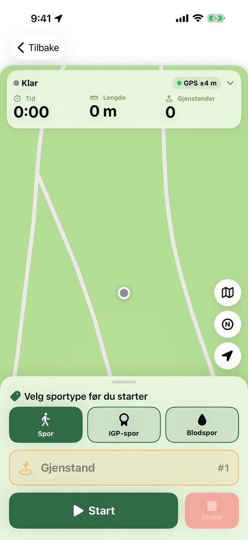
På blodspor er «Gjenstand» byttet ut med tre knapper:
- «Sårleie» legger ut et sårleie der du står. Det vises som en mørk rød dråpe på kartet.
- «Blodstopp» markerer at det ikke er blod herfra. Knappen heter «Blod igjen» så lenge blodstoppen varer. Trykk den der blodet starter igjen. Blodstoppen vises som en stiplet hvit strek oppå sporet.
- «Vilt» markerer hvor viltet ligger, med et brunt målflagg på kartet.
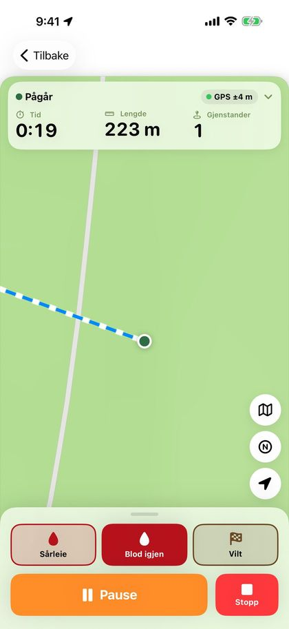
Der blodsporet starter, vises «Skuddplass» med en pil for fluktretningen. Etter «Stopp», og senere i sporoversikten, velger du «Fluktretning»: «Automatisk» (ut fra de første 15 meterne av sporet), en kompassretning eller «Ingen pil». Slå av «Vis fluktretning for fører» når fluktretningen ikke skal være merket, for eksempel på EK. Skuddplassen og pila vises også når sporet går blindt.
I kortet «Blod og sporsko» skriver du blodmengden i dl (valgfritt) og slår «Sporsko/klauv» av eller på. Under feltet ser du blod per 100 meter spor. Mindre blod per 100 meter gir et vanskeligere spor. Sist valgte verdier foreslås neste gang.
Blodspor har egne valg for liggetid, fra 30 minutter til 24 timer (se «Liggetid»).
Når blodsporet gås, telles sårleie og vilt som gjenstander. Varselet sier «Nær sårleie» eller «Nær vilt», og funnet registreres som «Sårleie registrert som funnet». Før en blodstopp og før blodet starter igjen varsler appen med «Blodstopp» og «Blod igjen» (se «Varsler og talevarsler»).
Sporoversikten og PDF-en viser «Sårleie, vilt og blodstopp» med lengden på hver blodstopp, og blodmengde og sporsko. Blodmengden er også med i hunderapporten og på bildet til sosiale medier.
05
Gjenstander
- Stå der gjenstanden legges, og trykk «Gjenstand». Gjenstanden lagres med en gang, med nummer og posisjon.
- Vil du skrive en beskrivelse, for eksempel «sokk» eller «trekloss», trykker du «Beskriv» i meldingen som dukker opp.
- Trykket ved en feil? Trykk «Angre» i meldingen.
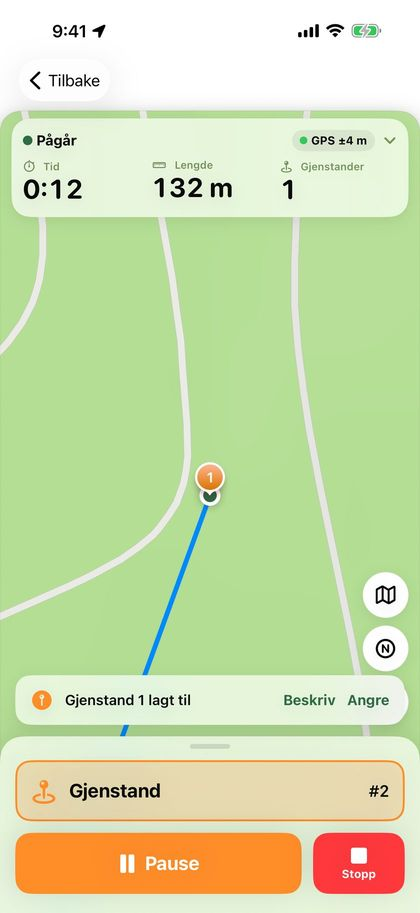
Gjenstandene nummereres i den rekkefølgen du legger dem ut. Beskrivelsen kan også skrives eller endres senere i sporoversikten, under «Gjenstander».
Farge og ikon for gjenstandene velger du under Innstillinger › Kart og spor. Valget gjelder alle kart, også i PDF-en og på bildet til sosiale medier.
Tips: Har telefonen ikke funnet posisjonen din ennå, lagres ikke gjenstanden. Vent noen sekunder til sporet begynner å tegnes, og prøv igjen.
06
Lagre sporet
Når du trykker «Stopp», får du opp arket «Lagre spor».
- «Lagre» lagrer sporet og tar deg tilbake til hjem-skjermen. Sporet ligger under «Klar til å gås».
- «Eksporter» lar deg velge Trax-fil, GPX eller PDF. Velg «Til en annen Trax-bruker» for å sende sporet til hundeføreren.
- «Fortsett sporet» tar deg tilbake til kartet hvis du trykket «Stopp» for tidlig.
Du kan gi sporet et navn. Lar du feltet stå tomt, får sporet et navn med dato og klokkeslett.
Under «Underlag» kan du skrive hva sporet går over, for eksempel skogsbunn, grus eller eng. Hundeføreren ser underlaget på sporet, også når du sender det til en annen telefon.
Under «Liggetid» velger du hvor lenge sporet skal ligge før hunden går det (se «Liggetid»). På blodspor kommer også kortene «Skuddplass» og «Blod og sporsko» (se «Sportype og blodspor»).
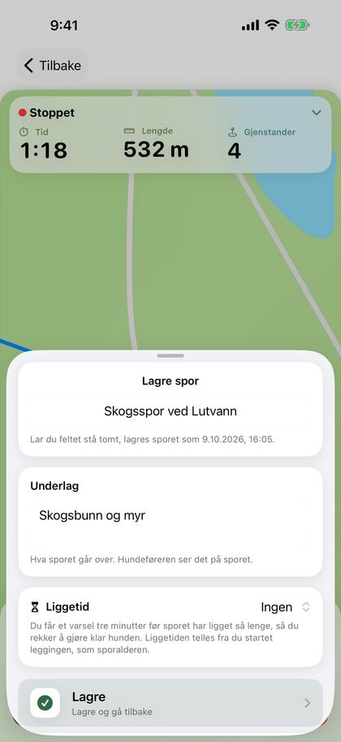
07
Liggetid
Liggetid er tiden fra du startet å legge sporet, til hundeføreren starter å gå det. Den telles opp av seg selv og vises både mens sporet venter og mens det gås. Når sporet er gått, låses liggetiden og lagres sammen med sporet.
Vil du ha beskjed når sporet har ligget lenge nok, velger du liggetid i arket «Lagre spor»: «Ingen», 15, 30, 45, 60 eller 90 minutter, 2 timer, eller «Egendefinert …» med timer og minutter (høyst 48 timer). Sist valgte liggetid huskes. På blodspor er valgene 30 minutter og 1, 2, 3, 6, 12, 18 og 24 timer, og blodspor husker sitt eget valg.
Første gang spør telefonen om Trax kan sende varsler. Tre minutter før liggetiden er ute får du varselet «Sporet «…» er klart om 3 min (liggetid 30 min). Gjør klar hunden.» Låseskjermen og Dynamic Island teller ned, og viser «Sporet er klart» med sporalderen til sporet startes. Trykk på varselet eller nedtellingen for å åpne sporet.
Liggetid over 8 timer får ingen nedtelling på låseskjermen, bare varselet før sporet er klart.
Kortet «Liggetid» i sporoversikten viser nedtellingen for spor som venter. Der kan du endre liggetiden eller velge «Ingen». Varselet og nedtellingen forsvinner når sporet startes eller slettes.
Tips: Varselet er tidssensitivt og kommer gjennom Fokus, for eksempel Søvn, når «Tidssensitive varslinger» er på for Trax. Har du slått av varsler for Trax, sier kortet fra, med en knapp til Innstillinger.
08
Kryss-spor
Et kryss-spor er et ferskere spor som krysser hovedsporet, for å trene hunden i å holde seg på riktig spor.
- Legg hovedsporet som vanlig, og lagre det.
- Åpne sporet fra «Klar til å gås», og trykk «Legg kryss-spor» i kortet «Kryss-spor».
- Hovedsporet vises svakt på kartet. Trykk «Start» og gå på tvers av hovedsporet. «Pause» og «Stopp» virker som når du legger et vanlig spor, men kryss-spor har ingen gjenstander.
- Trykk «Stopp». Skriv gjerne hvem som la kryss-sporet under «Lagt av», og trykk «Lagre kryss-spor».
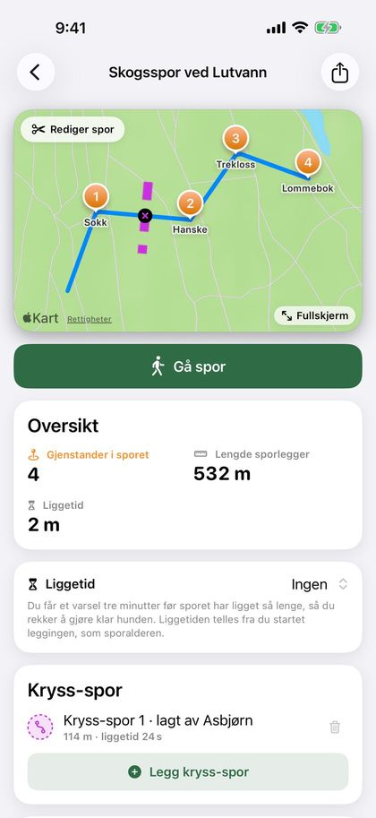
Kryss-spor vises stiplet i en egen farge, med et lite kryssmerke der de krysser hovedsporet. Kortet viser lengden og kryss-sporets egen liggetid. Du kan legge flere kryss-spor, og slette et kryss-spor med søppelbøtta før sporet gås.
Når hunden går sporet, varsler appen 12 meter før hvert kryss med «Kryssende spor» (se «Varsler og talevarsler»). Kryss-sporene vises også i avspillingen, i PDF-en og på bildet til sosiale medier, og følger med når du sender sporet. På blindt spor er de skjult til sporet stoppes.
09
Gå spor
Som hundefører går du sporet med hunden. Sporleggerens rute og gjenstandene vises på kartet, og din egen rute tegnes i en annen farge.
- Åpne sporet fra «Klar til å gås» og trykk «Gå spor».
- Velg hunden som skal gå sporet. Har du bare én hund, er den valgt allerede. Har du ikke registrert hunder, kan du starte med en gang.
- Vil du gå uten å se sporet, slår du på «Gå blindt» (se «Blindt spor»).
- Trykk «Start».
- Følg hunden. Bruk «Pause» og «Fortsett» ved behov.
- Trykk «Funnet» når hunden markerer en gjenstand.
- Trykk «Stopp» når sporet er gått.
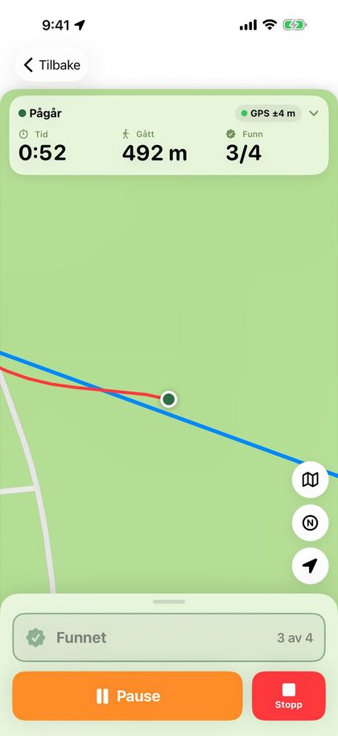
Før du starter, viser feltet øverst hvor gammelt sporet er, hvor langt det er og hvor mange gjenstander det har. Under sporet viser det tid, hvor langt du har gått og hvor mange gjenstander som er funnet. Liggetiden ser du ved å trykke på feltet. Er GPS-signalet svakt, vises samme boks som når du legger spor.
Når du trykker «Start», zoomer kartet inn på deg med samme utsnitt hver gang. Kartet følger deg mens du går, og zoomer du inn eller ut, beholder kartet zoomen du valgte. Kartknappen går i ring mellom vanlig kart, topo (bare i Norge) og satellitt, og N-knappen bytter mellom nord opp og et kart som snur seg etter retningen din. Pila over kartknappene viser vinden da hunden startet sporet.
Kommer du for langt fra det lagte sporet, vibrerer telefonen og kortet «Sportap» vises øverst med hvor langt unna du er. Kortet forsvinner når du er tilbake på sporet, eller når du trykker på krysset. Les mer om dette og de andre varslene i «Varsler og talevarsler».
Opptaket fortsetter når skjermen er låst eller du bytter app. Sporet vises på låseskjermen og i Dynamic Island, og på låseskjermen kan du trykke «Pause», «Fortsett» og «Funnet».
Trykker du «Tilbake» etter at du har startet, kommer spørsmålet «Avslutte hundesporet?». Du kan stoppe og lagre, sette sporet på pause eller velge «Forkast hundespor». Står sporet på pause, fortsetter du det ved å åpne sporet igjen. «Forkast hundespor» sletter bare det du har gått. Sporet sporleggeren la, blir liggende under «Klar til å gås».
Stopper appen midt i et spor, for eksempel fordi telefonen gikk tom for strøm, er sporet lagret underveis. Det står under «Klar til å gås» med «Spor pågår». Åpne sporet og trykk «Gå spor», så fortsetter sporet fra pause. Tiden appen var stoppet, regnes ikke med i tiden brukt.
10
Blindt spor
Gå sporet uten å se hvor sporleggeren gikk, slik du gjør på prøve.
Slå på «Gå blindt» før du trykker «Start». Bryteren er alltid av når du åpner sporet, så du må slå den på hver gang.
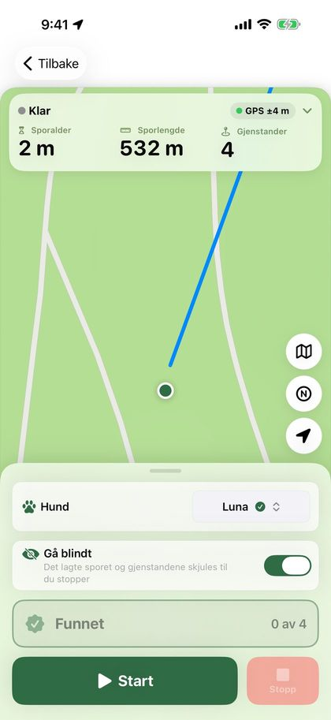
- Det lagte sporet, gjenstandene, blodstoppene, kryss-sporene og vinklene er skjult på kartet til du trykker «Stopp». Skuddplassen og fluktretningen på blodspor vises likevel.
- Du får ingen varsler underveis, verken om gjenstander, blodstopp, sportap eller kryssende spor, og gjenstander leses ikke opp.
- Feltet øverst viser bare hvor mange gjenstander som er funnet, ikke hvor mange det er.
- «Funnet» registrerer nærmeste gjenstand, uansett hvor langt unna den er.
Trenger du å se sporet, for eksempel fordi dere har gått dere bort, trykker du «Vis sporet». Da vises alt, og sporet regnes ikke lenger som blindt.
Sporoversikten og PDF-en viser «Gått blindt», og når sporet ble vist hvis du trykket «Vis sporet».
11
Registrere funn
Når du kommer innenfor valgt avstand av en gjenstand (12 meter som standard), vises et banner med nummer, beskrivelse og avstand. Telefonen vibrerer, også med låst skjerm. Er GPS-en unøyaktig, venter appen med varselet til posisjonen er bedre. Avstanden og varseltypen velger du under Innstillinger › Varsler (se «Varsler og talevarsler»).
- Trykk «Merk som funnet» i banneret, eller den store «Funnet»-knappen nederst. Velg «Senere» hvis du vil vente.
- Trykker du ikke på noe, lukkes banneret av seg selv når du har gått et stykke forbi (25 meter, eller dobbelt valgt avstand hvis det er lengre), eller når du nærmer deg neste gjenstand. Gjenstanden registreres da ikke som funnet, men du kan krysse den av når du stopper.
- «Funnet» kan bare trykkes når du er innenfor valgt avstand av en gjenstand som ikke er funnet ennå, både i appen og på låseskjermen. Vises ikke banneret, registreres den nærmeste.
- Trykket feil? Trykk «Angre» i meldingen som dukker opp nederst.
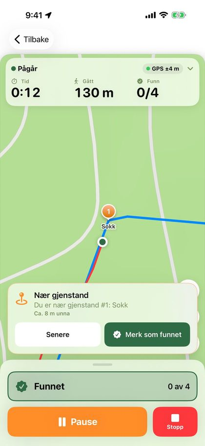
Når du stopper, kommer arket «Sporet er ferdig» med en oversikt over gjenstandene. Funn du registrerte underveis, er allerede krysset av. Rett opp hvis noe mangler.
I samme ark kan du gi sporet en vurdering (se «Vurdering og vinkler») og skrive et notat, for eksempel om forholdene eller hvordan hunden arbeidet. Notatet kommer med i PDF-en. Fylte ikke sporleggeren ut underlaget, kan du skrive det her. Trykk «Lagre» når du er ferdig.
«Eksporter» i samme ark deler sporet som Trax-fil, GPX eller PDF med en gang. Vil du vise fram sporet, trykker du «Del på sosiale medier» (se «Dele og motta spor»).
Tips: Vil du gå sporet uten varsler og uten å se det, slår du på «Gå blindt» før start (se «Blindt spor»).
12
Varsler og talevarsler
Mens hunden går sporet, kan telefonen varsle deg med vibrasjon, lyd og tale. Alle varslene stilles inn under Innstillinger › Varsler.
- «Gjenstand i nærheten»: når du er innenfor «Avstand til gjenstand» (5–50 meter, 12 meter som standard). På blodspor gjelder det sårleie og vilt.
- «Blodstopp» og «Blod igjen» (gjelder blodspor): før du kommer til en blodstopp, og før blodet starter igjen etter den. Avstanden velger du under «Avstand til blodstopp» (20 meter som standard).
- «Sportap»: når du har vært lenger fra det lagte sporet enn «Avstand fra sporet» et stykke (5–30 meter, 15 meter som standard). Appen varsler ikke før du har vært på sporet én gang.
- «Kryssende spor»: 12 meter før hvert sted der et kryss-spor krysser sporet. Kryss som ligger tett, gir ett varsel.
Alle disse er på som standard. Hovedbryteren «Varsler» øverst slår alle varsler av og på, også talevarslene. Varslene kommer også på låseskjermen. På blindt spor kommer ingen varsler. Endringer i blodstopp, sportap og kryssende spor gjelder fra neste gang du starter et spor.
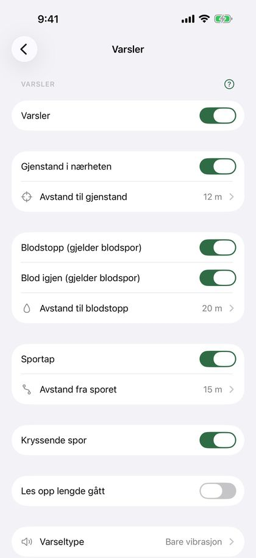
Under «Varseltype» velger du «Bare vibrasjon» eller «Vibrasjon og lyd». Lyden høres bare når telefonen ikke står på lydløs eller i «Ikke forstyrr».
Talevarsler: slå på «Les opp varsler» under «Varseltype». Da leser telefonen opp alle varslene du har slått på, for eksempel «Gjenstand 3, cirka 11 meter unna», «Blodstopp om 20 meter» eller «Sportap, cirka 18 meter fra sporet». Trykk «Hør eksempel» for å høre stemmen. Talevarslene høres i AirPods eller høyttaleren, også med låst skjerm og når telefonen står på lydløs. Musikk dempes mens beskjeden leses.
Slår du på «Les opp lengde gått» under Varsler, leser telefonen også opp hvor langt du har gått, for eksempel «300 meter gått». Under «Hvor ofte» velger du hver 100, 200 eller 500 meter, eller hver km. Dette gjelder bare når «Les opp varsler» er på.
Tips: Med AirPods i ørene hører du talevarslene uten å ta fram telefonen, og hunden blir ikke forstyrret av lyd fra høyttaleren.
13
Sporoversikten
Trykk på et spor på hjem-skjermen for å se alt om det.
- Kartet viser begge rutene og alle gjenstandene. Trykk «Fullskjerm» for et større kart. Der bytter kartknappen nede til høyre mellom kart, topo og satellitt. Fullskjerm åpner alltid på vanlig kart.
- «Valg» øverst til venstre på kartet har «Spill av sporet» og «Rediger spor». På et spor som ikke er gått ennå, står «Rediger spor» der direkte.
- Resultatet viser hvor mange gjenstander som ble funnet, lengden, liggetiden, tiden brukt og hunden.
- Gikk du med feil hund, eller glemte å velge hund? Trykk «Bytt hund» eller «Velg hund» i raden for hund, og velg en annen hund eller «Ingen hund». Har du ikke registrert hunder, står det «Legg til hund».
- På kartet får funnede gjenstander en liten grønn hake i hjørnet og beholder fargen og symbolet sitt, så du ser om det var sårleie eller vilt. Gjenstander som ikke ble funnet, er grå. Hundeførerens rute er fargelagt etter hvor langt fra sporet den gikk (se «Avvik fra sporet»), og små nummererte sirkler viser vinklene i sporet (se «Vurdering og vinkler»).
- «Vurdering» under resultatet viser karakter, vanskelighetsgrad og læringspunkt.
- «Avvik fra sporet» viser hvor godt du og hunden fulgte sporet.
- For spor som venter, finner du kortene «Liggetid» og «Kryss-spor» (se de avsnittene).
- Under «Gjenstander» ser du hver gjenstand med beskrivelse og resultat. Trykk på en gjenstand for å skrive eller endre beskrivelsen. På blodspor heter kortet «Sårleie, vilt og blodstopp».
- «Sportype», underlag og notat står lenger ned. Trykk på dem for å endre.
- Delingsknappen øverst eksporterer sporet som Trax-fil, GPX eller PDF, og lager bildet til sosiale medier for fullførte spor.
- «Detaljer» viser «Legging startet», «Legging ferdig», «Sporing startet» og «Sporing ferdig», antall vinkler og om sporet ble gått blindt. Trykk «Endre navn» for å gi sporet et nytt navn.
- «Slett spor» nederst sletter sporet etter at du har bekreftet.
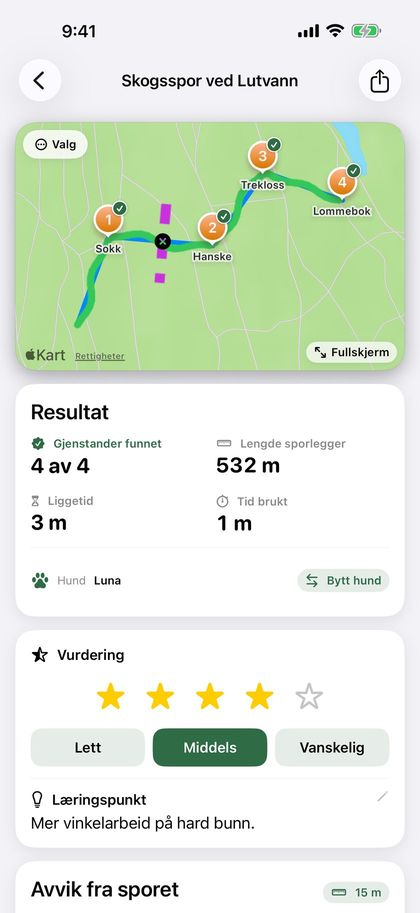
14
Vurdering og vinkler
Gi hvert spor en vurdering, og se hvor mange vinkler sporet hadde.
Kortet «Vurdering» står i arket «Sporet er ferdig» og under resultatet i sporoversikten. Alt er valgfritt:
- «Karakter»: 1 til 5 stjerner.
- «Vanskelighetsgrad»: «Lett», «Middels» eller «Vanskelig».
- «Læringspunkt»: én linje om hva som gikk bra, eller hva som må jobbes mer med.
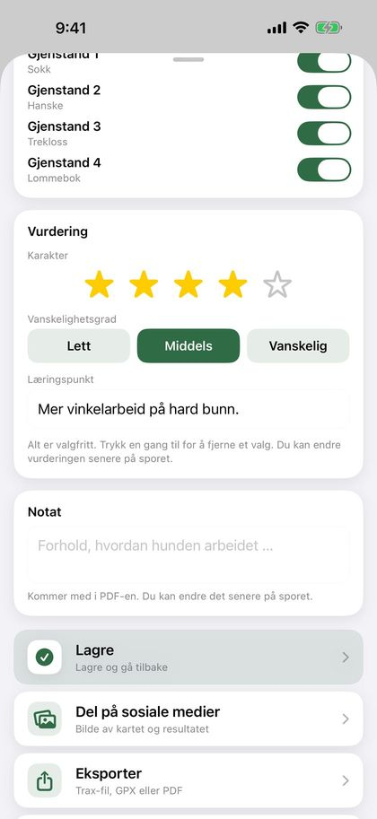
Trykk en gang til på valgt stjerne eller grad for å fjerne valget. I sporoversikten trykker du på stjernene eller graden for å endre, og på læringspunktet for å skrive det.
Utviklingsgrafen for hunden har valget «Karakter», med punktene farget etter vanskelighetsgrad: grønn er lett, oransje middels og rød vanskelig. PDF-en viser karakter og vanskelighetsgrad, og læringspunktet som egen del. Hunderapporten har snittkarakter på forsiden. Vurderingen følger med når du sender sporet som Trax-fil.
Vinkler: Trax teller vinklene i det lagte sporet av seg selv, der sporet svinger minst 45 grader. Små bukter og GPS-støy telles ikke. «Detaljer» i sporoversikten viser «Vinkler», og kartet har små nummererte sirkler ved hver vinkel. PDF-en har raden «Vinkler i sporet». Spor under 30 meter får ingen vinkler, og på blindt spor er de skjult til sporet stoppes.
15
Spill av sporet
Se hvordan hunden arbeidet, over sporet sporleggeren la.
- Åpne et fullført spor, trykk «Valg» øverst til venstre på kartet og velg «Spill av sporet».
- Trykk på avspillingsknappen. En pote viser hvor hunden var, og ruten tegnes fram etter hvert.
- Dra i tidslinjen for å hoppe fram eller tilbake. Under tidslinjen ser du hvor langt ut i sporet du er, og klokkeslettet.
- Trykk på hastighetsknappen for å spille av 5, 10, 30 eller 60 ganger fortere enn virkelig tid.
Gjenstandene får en grønn hake når de blir funnet. På eldre spor, der tidspunktet for funnet ikke er lagret, blir gjenstanden funnet der hunden var nærmest den.
16
Rediger spor
Kutt bort starten eller slutten av et spor, for eksempel en lang hale fordi du glemte å trykke Stopp.
- Åpne sporet og trykk «Valg» øverst til venstre på kartet, og så «Rediger spor». På et spor som ikke er gått ennå, står «Rediger spor» der direkte.
- Har sporet både sporleggerens og hundeførerens spor, velger du hvilket du vil kutte øverst. Du kan kutte begge før du lagrer.
- Dra håndtakene under kartet: det venstre er ny start, det høyre ny slutt. Det som kuttes bort, blir grått på kartet. Bruk pilene for å flytte ett punkt om gangen.
- Trykk «Lagre». Lengde, varighet og liggetid regnes ut på nytt, og avviket fra sporet følger med.
Ligger det gjenstander eller funn i delen som kuttes, spør appen om de skal flyttes til nærmeste punkt eller fjernes. Et funn som fjernes, regnes som ikke funnet.
Viktig: Kuttet kan ikke angres etter at du har lagret. Punktene som kuttes bort, slettes.
17
Avvik fra sporet
Se hvor godt du og hunden fulgte sporet sporleggeren la.
Kortet «Avvik fra sporet» står under resultatet i sporoversikten for fullførte spor. Det viser:
- Hvor stor del av ruten din som var innenfor grensen for «på sporet».
- «Tapte sporet»: hvor mange ganger føreren var utenfor grensen sammenhengende i minst 20 meter (eller dobbelt grense hvis det er lengre), og hvor langt ut i sporet det skjedde første gang.
- Snittavvik og største avvik.
Grensen velger du med knappen øverst til høyre i kortet: 5, 10, 15, 20 eller 30 meter. Standard er 15 meter. Valget huskes og gjelder også PDF-en og «På sporet» i hundesammendraget. Varselet om sportap mens du går, har sin egen grense under Innstillinger › Varsler.
På kartet, i fullskjerm og i avspillingen er hundeførerens rute fargelagt: grønn innenfor grensen, oransje opptil dobbelt grense og rød lenger unna. Mens du går sporet, brukes fortsatt fargen du har valgt under Innstillinger › Kart og spor.
Tips: Avviket måles fra førerens GPS-spor, ikke hundens. GPS-en bommer ofte med noen meter, så små avvik betyr lite.
18
Vær
Trax henter været på stedet der sporet startet, for tidspunktet du startet: temperatur, vind og vindretning, nedbør og luftfuktighet. Når hunden starter sporet, hentes været på nytt, siden vinden kan ha snudd eller økt i løpet av liggetiden. Værdata lagres sammen med sporet og er med i PDF-eksporten, med kolonnene «Lagt» og «Sporet».
Mens sporet legges og mens hunden sporer, viser en liten pil på kartet, over kartknappene, hvor vinden blåser og styrken i m/s. Pila peker dit vinden blåser, altså dit lukten går, og snur seg med kartet. Trykk på pila for å se for eksempel «Vind fra SV, 4 m/s». Vinden hentes én gang ved start og oppdateres ikke underveis. Pila er også med på kartet i PDF-en og på bildet til sosiale medier.
Mangler et spor værdata, for eksempel fordi du var uten dekning, trykker du «Hent vær» i sporoversikten. Dette krever internett.
Værdata kommer fra Apple Weather. Under værkortet finner du Apple Weather-merket og en lenke til Apples oversikt over andre datakilder.
19
Dele og motta spor
Sporlegger og hundefører trenger ikke bruke samme telefon. Sporleggeren sender sporet som en Trax-fil.
- Sporleggeren trykker «Eksporter» › «Til en annen Trax-bruker» når sporet er lagt, eller på delingsknappen øverst i sporoversikten.
- Send filen med AirDrop eller e-post. AirDrop er best, for da åpnes sporet rett i Trax hos mottakeren.
- Fra e-post eller Filer trykker mottakeren på filen. Da vises en forhåndsvisning med kart, lengde, antall gjenstander og underlag. Trykk på delingsknappen og velg Trax.
- Trax viser «Spor mottatt» med lengde og antall gjenstander. Velg «Gå sporet nå» eller «Lagre til senere». «Avbryt» lukker uten å importere.
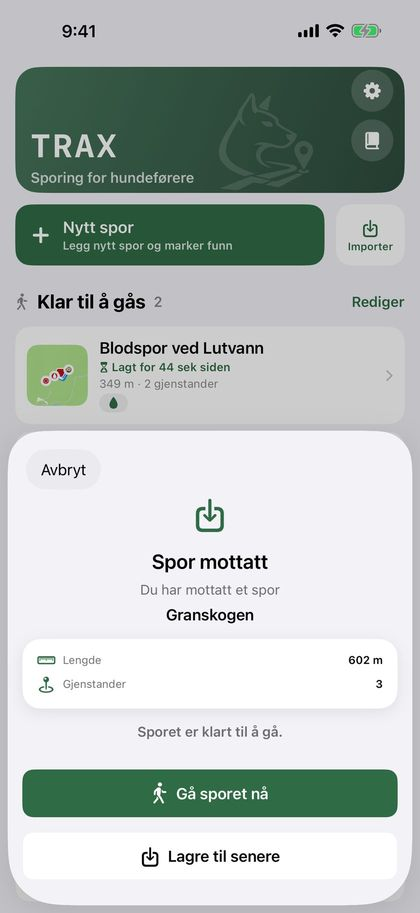
Viktig: Ikke send sporet med Meldinger. Går meldingen som SMS i stedet for iMessage, kommer filen ikke fram, og det er vanskelig å se på forhånd hvilken det blir.
Filen inneholder sporleggerens rute, gjenstandene med beskrivelse, underlaget, sportypen, kryss-sporene og det som hører til blodspor. Er sporet allerede gått, er hundens rute og vurderingen også med, og mottakeren får bare valget «Lagre». Sporet havner da under «Fullførte spor».
Du kan også trykke «Importer» på hjem-skjermen og velge en fil fra Filer-appen. GPX-filer fra andre apper og GPS-enheter fungerer også. Velg «GPX (andre apper)» når du vil åpne sporet i en annen kartapp.
Har ikke sporleggeren iPhone? Da kan sporet legges i en hvilken som helst GPS-app som lagrer GPX-filer. Sporleggeren lagrer et veipunkt der hver gjenstand legges ut, eksporterer sporet som GPX og sender filen med e-post. Du trykker på filen og velger Trax, på samme måte som med en Trax-fil.
Veipunktene blir gjenstander, med navnet som beskrivelse, og du får varsel når hunden nærmer seg dem. Gjenstander kan ikke legges til i Trax etterpå, så uten veipunkter i filen kommer sporet uten gjenstander. Send ett spor per fil. Har filen to spor, leser Trax det andre som hundens rute.
Sporet får merket «Eksportert» først når delingen er fullført, enten du deler Trax-fil, GPX eller PDF. Avbryter du delingsarket, blir det ikke merket.
Del på sosiale medier: Når du har gått et spor, trykker du «Del på sosiale medier» under «Lagre». Du ser først bildet: satellittkart med sporet og gjenstandene, hundens navn og et kort med lengde, liggetid, antall funnet og sportype. Trykk «Del bildet» og velg Instagram, Facebook, Snapchat eller en annen app, eller «Arkiver bilde» for å lagre det i Bilder. Sporet lagres ikke når du deler, så husk å trykke «Lagre» etterpå. Eldre spor deler du fra delingsknappen øverst i sporoversikten.
Tips: Vil dere ha et felles arkiv i treningsgruppa? Lag en mappe i iCloud Drive i Filer-appen og del den med gruppa. Velg «Arkiver i Filer» når du eksporterer et spor, og legg Trax-filen i den delte mappen. De andre trykker på filen i mappen og åpner den i Trax, på samme måte som fra e-post.
20
PDF-rapport
I sporoversikten kan du trykke på delingsknappen øverst og velge «PDF (flere)» og velge ett eller flere fullførte spor. Du får én PDF med kart, nøkkeltall, gjenstander, funn, underlag, notat, vurdering og vær for hvert spor, klar til å sende eller skrive ut.
Nøkkeltallene har også sportype, vinkler, «Innenfor X m av sporet» og «Tapte sporet», og hundeførerens rute er fargelagt etter avvik i kartet, med grensen du har valgt i sporoversikten (se «Avvik fra sporet»). Blodspor har også blodmengde, sporsko/klauv og blodstoppene. Hver gjenstand står med koordinat i formatet du har valgt under Innstillinger › Kart og spor, og hvor nøyaktig GPS-en var da gjenstanden ble lagt, for eksempel «±4 m nøyaktighet». Eldre spor har ikke lagret nøyaktigheten, og da står det «nøyaktighet ukjent».
Vil du ha alle sporene til én hund, trykker du på «Se alle» ved «Siste spor» på hjem-skjermen og deretter på dokumentknappen øverst til høyre. Velg hund, og slå på «Velg periode» hvis du bare vil ha sporene mellom to datoer. PDF-en får en forside med oppsummering, snittkarakter og liste over sporene, og deretter én side per spor. Sporene i rapporten får merket «Eksportert».
Tips: PDF-rapporten passer godt som treningsdagbok eller til å vise instruktøren.
21
Hunder
Registrer hundene du trener med, så ser du hvilken hund som gikk hvert spor.
- Gå til Innstillinger › Mine hunder.
- Trykk «Legg til hund» og skriv navnet.
- Trykk «Lagre».
Når du har registrert hunder, velger du hund når du starter å gå et spor, ikke når sporet legges. Har du bare én hund, er den valgt på forhånd. Hunden vises i sporoversikten og i PDF-rapporten.
Hunden kan byttes etterpå i sporoversikten. På siden «Fullførte spor» (trykk «Se alle» på hjem-skjermen) kan du vise sporene til én hund om gangen med knappene øverst.
Når du velger én hund, viser kortet fire tall: «Spor», «Funnet», «Siste 30 dager» og «På sporet» (snittet av hvor stor del av hvert spor som var innenfor grensen for avvik). Under står «Utvikling»: en graf over hundens fullførte spor over tid. Velg hva grafen skal vise: «Sporalder» (liggetid), «Lengde», «Funnet», «På sporet», «Karakter» eller «Blod» (blodmengde per 100 meter, når hunden har minst to blodspor med blodmengde). Grafen kommer når hunden har minst to spor. Mangler sporene verdien du har valgt, står det at det er for få spor til å vise en graf.
Sletter du en hund, beholder sporene hundenavnet. Hunden vises under Innstillinger › Mine hunder › «Tidligere hunder» så lenge den har spor, og der kan du slå av bryteren for å skjule den fra hundefilteret. Sporene ligger fortsatt under «Alle».
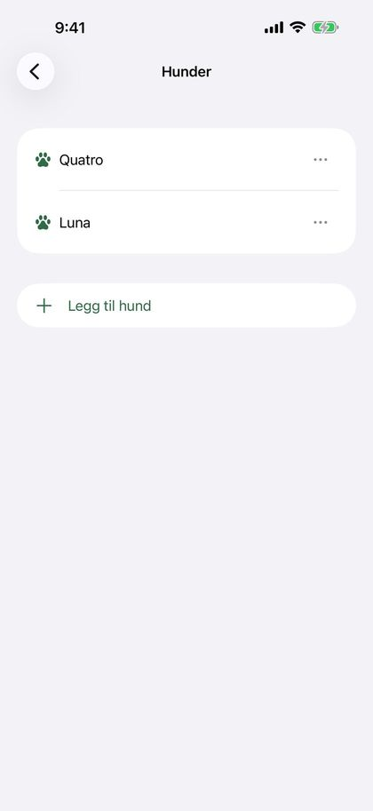
22
Innstillinger
Øverst i Innstillinger står «Mine hunder», og under den én rad for hver side: Varsler, Kart og spor, Batteri, Sikkerhetskopi og Om Trax. Trykk på en rad for å åpne siden.
- Varsler: varsel om gjenstand i nærheten, blodstopp og blod igjen, sportap og kryssende spor, opplesing av lengde gått, og varseltype med talevarsler. Se «Varsler og talevarsler».
- Kart og spor: velg farge og ikon for gjenstandsmarkørene (tall, kartnål, flagg, potespor eller pose), «Sporleggerens farge» og «Hundeførerens farge». «Snu kartet etter retningen min» lar kartet snu seg etter retningen du står mens du legger eller går spor; når det er av, er nord alltid opp. Her velger du også koordinatformat: desimalgrader (DD), UTM, grader/minutter/sekunder (DMS) eller MGRS.
- Batteri: «Sparemodus for GPS» bruker mindre strøm på lange spor. Sporet blir litt grovere, men nærhetsvarselet og «Funnet» virker som før. Under opptak vises batterinivået øverst, og appen varsler ved 20 og 10 prosent, også med låst skjerm.
- Sikkerhetskopi: automatisk kopi til iCloud Drive, og sikkerhetskopi du lager selv. Se «Sikkerhetskopi og ny telefon».
- Mine hunder: legg til, endre navn på eller slett hunder. Under «Tidligere hunder» kan du skjule slettede hunder fra hundefilteret.
- Om Trax: «Send tilbakemelding» åpner en e-post til meg med appversjon, iOS-versjon og telefonmodell ferdig utfylt. Skriv spørsmålet, feilen eller ønsket ditt øverst. «Skriv anmeldelse» åpner Trax i App Store, der du kan gi stjerner og skrive en anmeldelse. «Personvernerklæring» åpner personvernerklæringen på nettsiden til Trax.
Tips: Trykk på «?» ved en seksjon for å se en forklaring av innstillingene der. Trykk igjen for å skjule den.
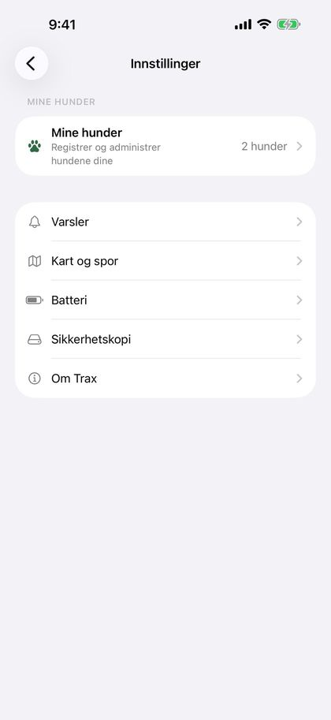
23
Sikkerhetskopi og ny telefon
Ta vare på sporene dine hvis du mister telefonen eller bytter til en ny.
«Automatisk kopi til iCloud Drive» under Innstillinger › Sikkerhetskopi er på som standard. Trax legger da en sikkerhetskopi i mappen «Trax» i din egen iCloud Drive når du legger bort appen etter en endring. Under bryteren står det når siste kopi ble lagt der, eller at iCloud Drive er av på telefonen.
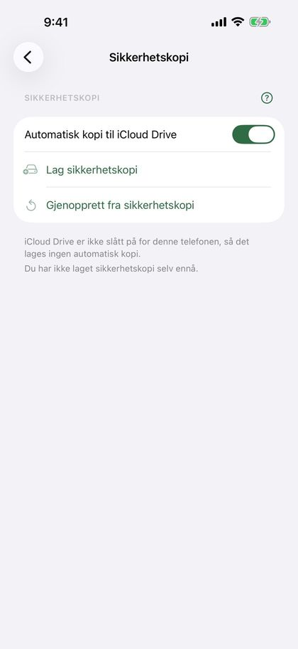
Du kan også lage en sikkerhetskopi selv med «Lag sikkerhetskopi». Du får én fil (.traxbackup) med alle spor og hunder, som du kan lagre i Filer eller iCloud Drive, eller sende til deg selv. Under knappene står det når du sist laget en.
- Ny telefon, eller Trax installert på nytt: Trax spør én gang om sporene skal hentes fra iCloud Drive. Velg «Gjenopprett».
- Har du en sikkerhetskopi du laget selv, trykker du på filen (den åpnes i Trax), eller velger «Gjenopprett fra sikkerhetskopi» under Innstillinger › Sikkerhetskopi.
- Trax viser hvor mange spor og hunder kopien har, og spør før noe legges inn.
Gjenoppretting legger bare til spor og hunder som mangler. Ingenting slettes eller overskrives. En hund med samme navn som en hund på telefonen blir samme hund. Alt skjer på telefonen og i din egen iCloud Drive, uten konto.
24
Slette og gjenopprette spor
Trykk «Rediger» på hjem-skjermen for å velge og slette ett eller flere spor. Du kan også åpne et spor og trykke «Slett spor» nederst på siden. Du blir alltid spurt før noe slettes.
Viktig: Slettede spor kan ikke hentes tilbake, med mindre de finnes i en sikkerhetskopi. Eksporter sporet som GPX eller PDF først hvis du vil ta vare på det.
Stopper appen midt i en sporlegging, for eksempel fordi telefonen gikk tom for strøm, er sporet lagret underveis. Neste gang du åpner Trax, vises «Uferdig sporlegging» øverst. Velg «Fortsett» for å legge videre, «Avslutt» for å lagre sporet slik det er, eller «Slett».
Stopper appen midt i et spor, står sporet under «Klar til å gås» med «Spor pågår». Åpne det og trykk «Gå spor» for å fortsette fra pause. Vil du heller begynne på nytt, trykker du «Tilbake» og «Forkast hundespor».
25
Tips og feilsøking
- Sporet blir hakkete eller får hull: sjekk at Trax har stedstilgang og at «Presis posisjon» er på.
- GPS er mindre presis i tett skog, i bratte daler og mellom høye bygninger. Vent gjerne til posisjonen har stabilisert seg før du trykker «Start».
- Strømsparingsmodus kan gi færre GPS-punkter. Lad telefonen før lange spor, eller slå på «Sparemodus for GPS» under Innstillinger › Batteri.
- Ser du ikke sporet på låseskjermen? Sjekk at Live Activities er slått på under Innstillinger › Trax på iPhonen.
- Kommer ikke varselet om at liggetiden er ute? Sjekk at varsler er på for Trax under Innstillinger › Trax › Varslinger på iPhonen, og slå på «Tidssensitive varslinger» hvis du bruker Fokus.
- Hører du ikke talevarslene? Sjekk at «Varsler» og «Les opp varsler» er på under Innstillinger › Varsler › Varseltype, og at volumet er skrudd opp. Trykk «Hør eksempel» for å teste.
- Mottar du ikke sporet? Send det med AirDrop eller e-post, ikke Meldinger. Sjekk at filen slutter på .trax eller .gpx, og prøv «Importer» på hjem-skjermen.
- Spørsmål eller feil? Trykk «Send tilbakemelding» under Innstillinger › Om Trax, eller send en e-post til post@trax-dogtracking.no.
26
Personvern
Alle spor lagres på telefonen din. Trax har ingen konto og ingen egen server. Har du iCloud Drive, legger Trax en sikkerhetskopi i mappen «Trax» i din egen iCloud Drive. Det kan slås av under Innstillinger › Sikkerhetskopi. Sporene dine deles bare når du selv eksporterer dem.
Bildet til sosiale medier lages på telefonen. Velger du «Arkiver bilde», spør iOS om Trax kan legge til bilder i Bilder. Trax kan bare legge til bilder, ikke se bildene dine.
For å hente vær sendes posisjonen og tidspunktet der sporet startet, og der hunden startet sporet, til Apple Weather. Apple knytter ikke forespørselen til deg eller Apple-kontoen din, og ingen treningsdata sendes med.
Hele personvernerklæringen finner du under Innstillinger › Om Trax › Personvernerklæring.